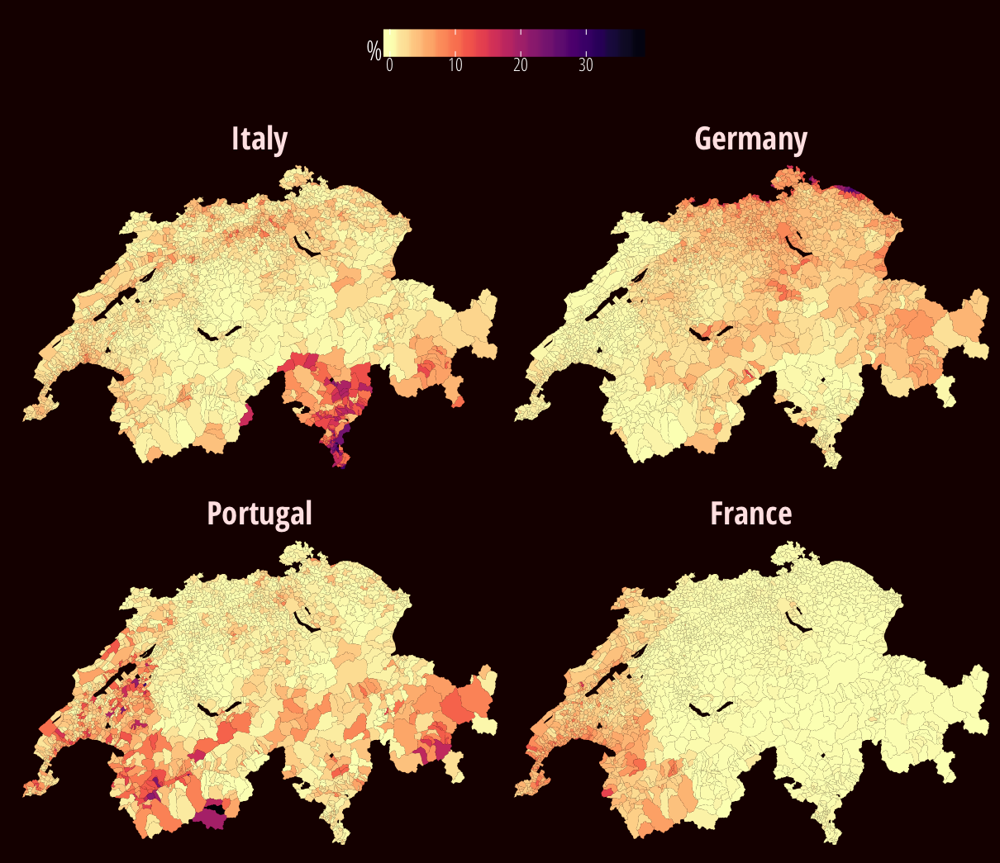
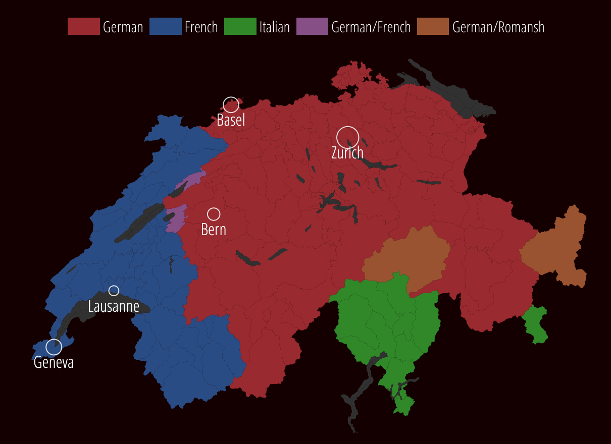

The four main foreign nationalities in Switzerland
As a percentage of the permanent Swiss resident population in 2016 and by municipality. These four nationalities represent half (49%) of all foreigners in Switzerland

Linguistic regions of Switzerland

Source: Federal Statistical Office and swisstopo | swissinfo.ch